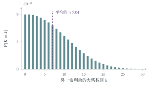

STEP II 1992，第 16 题
继续之前，请先阅读题目（原题为英文）。题目载于 STEP Support Programme 的题目资料库： step.maths.org/questions/92-s2-q16
引子
相传数学家巴拿赫（Stefan Banach）烟瘾很大，两边口袋各放一盒火柴。每次要用火柴，他就随机选一个口袋。有一天，他发现其中一盒空了。另一盒还剩多少根火柴？这就是巴拿赫火柴盒问题（Banach’s matchbox problem），由斯坦豪斯（Hugo Steinhaus）为向巴拿赫致意而设计；本题则是的士司机的版本，把火柴换成了糖果。
微妙之处在于“发现”一词。司机取走一包糖的最后一颗时，并不会察觉那包已经空了，要到下一次伸手去拿那包糖时才知道。所以这个事件是：她伸手去拿太妃糖，而全部 \(n\) 颗太妃糖早已吃完。计算这件事在第 \(N\) 次伸手时发生的方法数目，是二项分布（binomial distribution）的一道巧妙练习；而巴拿赫问题的答案有一个出人意表的特点：另一盒最可能剩下的火柴数目是 \(0\)（与 \(1\) 并列）。
动笔之前
若司机在第 \(N\) 次伸手时发现太妃糖已经吃完，第 \(N\) 次伸手必须是甚么？之前的 \(N - 1\) 次伸手又必须包含甚么？
第 \(N\) 次伸手必须是去拿太妃糖，而之前的 \(N - 1\) 次伸手必须刚好取走了 \(n\) 颗太妃糖（即全部）和 \(N - 1 - n\) 颗薄荷糖。此外，她在此之前不可以已经发现薄荷糖空了。
逐步解题
阶段 1 发现太妃糖吃完了
头 \(N - 1\) 次伸手可以按甚么次序出现？\(N - 1 - n\) 要符合甚么条件，才能确保她从未发现那包薄荷糖是空的？
那 \(n\) 次拿太妃糖的伸手，可以是头 \(N - 1\) 次伸手中的任何 \(n\) 次。只要她最多取了 \(m\) 颗薄荷糖，即 \(N - 1 - n \leq m\)，她就从未在薄荷糖吃完之后再伸手去拿薄荷糖。因此，对于 \(n + 1 \leq N \leq n + m + 1\)， \[\mathrm{P}(T_N) = \binom{N - 1}{n}p^{n+1}q^{N-1-n},\] 其中 \(T_N\) 是事件“她在第 \(N\) 次伸手时发现太妃糖吃完了”（因子 \(p^{n+1}\) 已包括第 \(N\) 次伸手本身）。
阶段 2 发现薄荷糖吃完了
把两者的角色对调，用同样的论证可得，对于 \(m + 1 \leq N \leq n + m + 1\)， \[\mathrm{P}(M_N) = \binom{N - 1}{m}q^{m+1}p^{N-1-m}.\]
阶段 3 条件概率
已知在第 \(N\) 次伸手时有所发现。那次拿的是太妃糖的概率是多少？
事件 \(T_N\) 与 \(M_N\) 互斥（exclusive），所以 \[\mathrm{P}(\text{太妃糖} \mid \text{有所发现的伸手次数为 } N) = \frac{\binom{N-1}{n}p^{n+1}q^{N-1-n}}{\binom{N-1}{n}p^{n+1}q^{N-1-n} + \binom{N-1}{m}q^{m+1}p^{N-1-m}},\] 其中二项式系数（binomial coefficient）在上述范围以外一律视为 \(0\)。（若 \(N \leq m\)，则只有太妃糖可能已经吃完，概率为 \(1\)；同样，若 \(N \leq n\) 但 \(N > m\)，概率为 \(0\)。）■
当 \(n = m\) 且 \(p = q = \frac12\) 时，验算一下这条公式。根据对称性，对每一个可能的 \(N\)，答案都应该是 \(\frac12\)。是否如此？
回顾
准确理解事件。“发现”是指伸手去拿一包已空的糖，而不是取走最后一颗糖。
固定最后一步，再数其余。第 \(N\) 次伸手已经固定；头 \(N - 1\) 次可以按任何次序出现，于是得出一个二项式系数。
检查边界。限制条件 \(N - 1 - n \leq m\) 和 \(N - 1 - m \leq n\) 排除了不可能出现的过程。
背后的数学
巴拿赫的火柴盒
在巴拿赫的版本中，每盒起初有 \(n\) 根火柴，选中每个口袋的机会均等。当他首次发现其中一盒空了，设 \(K\) 为另一盒的火柴数目。若 \(K = k\)，他必定已从空的那盒取了 \(n\) 根，从另一盒取了 \(n - k\) 根，次序不拘，然后再一次伸手去拿空的那盒；而两盒之中任何一盒都可以是空的那盒： \[\mathrm{P}(K = k) = 2\binom{2n - k}{n}\Bigl(\frac12\Bigr)^{2n - k + 1} = \binom{2n - k}{n}\Bigl(\frac12\Bigr)^{2n - k}.\] 这些概率随 \(k\) 增大而递减，唯一例外是 \(\mathrm{P}(K = 0) = \mathrm{P}(K = 1)\)（图 12.17.1）。剩余火柴数目的期望值（expected value）约为 \(2\sqrt{n/\pi} - 1\)：若每盒有 \(50\) 根火柴，约为 \(7\)。这个 \(\sqrt n\) 是经过 \(2n\) 次随机选择之后，两盒之间差距的典型大小，与生日问题（第 9.9 节）和随机漫步（random walk）中的平方根定律如出一辙。

负二项分布
在一连串独立试验（independent trials）中，每次试验成功的概率为 \(p\)，则取得第 \(r\) 次成功所需的试验次数服从负二项分布（negative binomial distribution）：\(\mathrm{P}(N = k) = \binom{k - 1}{r - 1}p^rq^{k-r}\)。的士司机的问题，是两个负二项过程（太妃糖和薄荷糖）之间的竞赛，每个过程所需的“成功”次数都比该包糖的数目多一次。负二项分布见于保险（索偿宗数）、生态学（动物聚集分布的数目）和遗传学，往往用来代替泊松分布（Poisson distribution），因为它更有弹性。
巴拿赫是泛函分析（functional analysis）的奠基人之一，他的数学研究有不少是在 Lwów（今称 Lviv）的苏格兰咖啡馆（Scottish Café）里完成的。他和同事把问题写在一本由侍应保管的笔记簿上，这就是《苏格兰书》（Scottish Book），解题奖品从一杯啤酒到一只活鹅不等。斯坦豪斯是巴拿赫的恩师，他为了一篇向巴拿赫的吸烟习惯致意的演说，设计了这道火柴盒问题。最先在书刊中分析这个问题的，是费勒（William Feller）1950 年出版的著名概率论教科书。
思维技巧
要求一个过程在某一时刻以某种方式结束的概率，可先固定最后一步发生的事，再数出通往这一步的所有过程。
在大学里，这是负二项分布、随机漫步的首达时间（first-passage time），以及 第 9.10 节 中反射原理（reflection principle）的基础。
延伸练习
小规模情况。设 \(n = m = 1\) 及 \(p = \frac12\)，列出所有可能的序列，并求 \(N\) 的分布。
巴拿赫公式。对 \(n = 1\) 和 \(n = 2\)，验证 \(\sum_{k=0}^{n}\binom{2n - k}{n}2^{-(2n-k)} = 1\)。
并列最高。证明在巴拿赫问题中，对每一个 \(n\) 都有 \(\mathrm{P}(K = 0) = \mathrm{P}(K = 1)\)。
哪一包先吃完？就的士司机的问题，当 \(n = m = 2\) 及 \(p = \frac23\) 时，求太妃糖是首先被发现空了的那一包（不论何时发现）的概率。
延伸阅读
William Feller, An Introduction to Probability Theory and Its Applications, Vol. 1（Wiley），第 VI 章，正是这本书把巴拿赫问题介绍给全世界。
R. Daniel Mauldin (ed.), The Scottish Book（Birkhäuser）。收录苏格兰咖啡馆的问题，并附评注。
Geoffrey Grimmett & Dominic Welsh, Probability: An Introduction（Oxford University Press），内容涉及负二项分布。